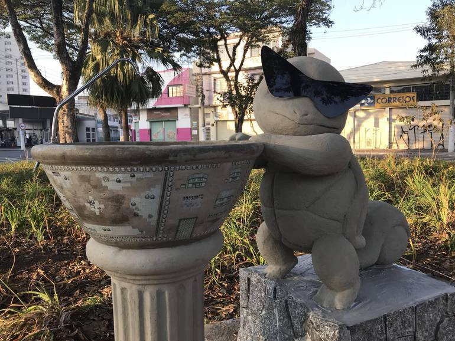

Estatua Pokemon mew e celebi
Estatua Pokemon charizard
Estatua Pokemon eevee
Estatua Pokemon bulbasauro
Estatua Pokemon larvitar

Estatua Pokemon squirtle
Magic City
Visão Aérea Magic City
Visão Aérea Magic City
Viveiro Municipal
Entrada Viveiro Municipal
Fonte Viveiro Municipal
Flores Viveiro Municipal
Ponte Viveiro Municipal
Templo Jomyoji
Templo principal
Templo lateral
Igreja Baruel
Visão frontal da Igreja Baruel
Visão lateral da Igreja Baruel